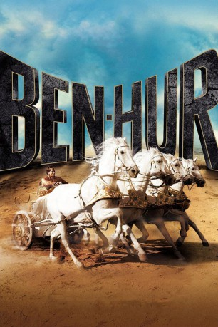

#810 Ben Hur
Alternativ: Ben-Hur
Auszeichnungen: 11 Oscars gewonnen für 1 Oscars nominiert 3 GoldenGlobes gewonnen 1 BAFTA-Awards gewonnen
 
 IMDB-Wertung: 8.1 / 10
IMDB-Wertung: 8.1 / 10  IMDB-TOP-Platzierung: 197
IMDB-TOP-Platzierung: 197  Metascore: 90
Metascore: 90 
Als Judah Ben-Hurs Jugendfreund Messala, der ihm einst das Leben rettete, nach Jersualem kommt, um dort neuer römischer Kommandant zu werden, ist die Wiedersehensfreude auf beiden Seiten groß. Die Freundschaft zwischen Messala und Judah wird auf die Probe gestellt, als Judah die jüdischen Aufständischen verraten soll. Nachdem bei einer römischen Parade der neue Statthalter vor Judahs Haus schwer verletzt wird, verdächtigt man Judah und seine Familie des Attentats. Unschuldig in den Kerkern gefangen, schwört Judah sich blutig für das begangene Unrecht an Messalas zu rächen. Mit seiner Verbannung auf eine Galeere beginnt für den stolzen Judah eine Odyssee, die ihn von den Meeren über die Wagenrennen in Rom Jahre später wieder nach Jerusalem bringt, wo Judah hofft seine Familie zu finden und seine Rachepläne zu vollenden.
Jahr: 1959
Dauer: 212 Minuten
FSK: 16
Land: USA Studio: MGMTonspuren: DD5.1 - ,
Untertitel:
Auflösung: 1080p (1920x696) Größe: 12390 MB
Genre: Abenteuer, Drama, Geschichte, Weihnachten
Regisseur: William Wyler
Drehbuch: Lew Wallace, Karl Tunberg, Gore Vidal, Maxwell Anderson, S.N. Behrman
Soundtrack: Miklós Rózsa
Darsteller:
 Charlton Heston als Judah Ben-Hur
Charlton Heston als Judah Ben-Hur Jack Hawkins als Quintus Arrius
Jack Hawkins als Quintus Arrius- Haya Harareet als Esther
- Stephen Boyd als Messala
 Hugh Griffith als Sheik Ilderim
Hugh Griffith als Sheik Ilderim- Martha Scott als Miriam
- Cathy O'Donnell als Tirzah
- Sam Jaffe als Simonides
 Finlay Currie als Balthasar / Narrator
Finlay Currie als Balthasar / Narrator- Frank Thring als Pontius Pilate
 André Morell als Sextus
André Morell als Sextus Robert Brown als Chief of Rowers , uncredited
Robert Brown als Chief of Rowers , uncredited Richard Hale als Gaspar , uncredited
Richard Hale als Gaspar , uncredited John Le Mesurier als Doctor , uncredited
John Le Mesurier als Doctor , uncredited Ferdy Mayne als Captain of Rescue Ship , uncredited
Ferdy Mayne als Captain of Rescue Ship , uncredited- May McAvoy als Woman in Crowd , uncredited
 Terence Longdon als Drusus
Terence Longdon als Drusus- George Relph als Tiberius Caesar
- Bruno Arié als Roman Officer , uncredited
- Les Ballets Africains als Dancers at Roman Banquet , uncredited
- Emma Baron als Jewish Woman , uncredited
- Ady Berber als Malluch , uncredited
 Marina Berti als Flavia , uncredited
Marina Berti als Flavia , uncredited- Hugh Billingsley als Mario , uncredited
 Jerry Brown als The Corinthian , uncredited
Jerry Brown als The Corinthian , uncredited- Lando Buzzanca als Jewish Slave in the Desert , uncredited
- Joe Canutt als Sportsman , uncredited
- Otello Capanna als The Byzantine , uncredited
- Emile Carrer als Rower No. 28 , uncredited
- Richard Coleman als Metellus , uncredited
- Antonio Corevi als Senator , uncredited
- Michael Cosmo als Raimondo , uncredited
- Alfredo Danesi als The Armenian , uncredited
- David Davies als Quaestor , uncredited
- Carmen de Hohenlohe als Guest at Banquet , uncredited
- Victor De La Fosse als Galley Officer , uncredited
- Liana Del Balzo als Guest at Banquet , uncredited
- Mino Doro als Gratus , uncredited
- Michael Dugan als Seaman , uncredited
- Franco Fantasia als Roman Soldier Who Brings Crown to Gratus , uncredited
- Dino Fazio als Marcello , uncredited
 Enzo Fiermonte als Galley Officer , uncredited
Enzo Fiermonte als Galley Officer , uncredited Giuliano Gemma als Roman Officer with Messala , uncredited
Giuliano Gemma als Roman Officer with Messala , uncredited- John Glenn als Rower No. 42 , uncredited
- José Greci als Mary , uncredited
- Claude Heater als Jesus - The Christ , uncredited
- Prince Hohenlohe als Guest at Banquet , uncredited
- John Horsley als Spintho , uncredited
- Eddie Juaregui als The Athenian , uncredited
- William Kiehl als Soldier , uncredited
Datei: X:\1950-1959\Ben Hur (1959, FSK16, 1920x696).mkv seit 27.03.2015
Festplatte: HD 1900-1970
 Es gibt insgesamt 141 Filme in der Gruppe '1950-1959'
Es gibt insgesamt 141 Filme in der Gruppe '1950-1959'